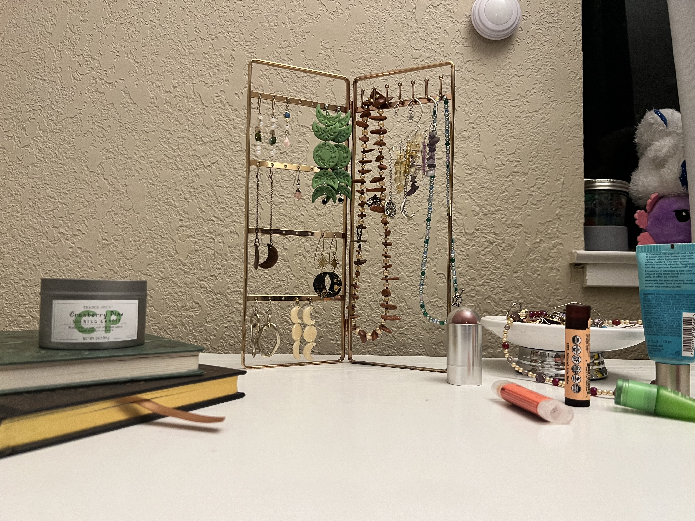

"An essential tip to enhance the usability of all graphic user interfaces is to minimize the amount of
options for the user to worry about. As designers and developers, we allow our excitement of progress to
cloud
our empathy toward our users. The combination of clean organization and spacing allow the user to digest
information at a standard rate, rather than being overwhelmed by too many options being available.To
read more about
this article, click here!
Despite my skepticism of capitalism, I think apple displays amazing organization on their website,
utilizing open space and images to not overwhelm the user. Here is the link!"
"This article is super important for all web and app designers to read. I cannot stress enough how valuable layout is in all applications. An organized and useful layout allows our users to navigate comfortably and have positive associations with the brand. Important elements to remember when creating GUIs are sizing, placement, hierarchy, etc. To learn more about the best practices for modals, overlays, and dialog windows, feel free to click this link to check out the article I am referrencing."
"To paraphrase a very popular saying, a picture is worth a thousand words. Implementing imagegry is essential to creating engaging and interesting multimodal projects, such as GUIs. Intruiging photographs are the key to getting more people to engage with one's content. When presented an article, just imaging, what do you look for first? Do your eyes go straight to the text-heavy content, or do they gloss over the main imagery of the page? To summarize my findings, I would suggest to all designers and developers to think about their's experience in any work that they do. To learn more about visual thinking strategies, feel free to click this link to check out the article I am referrencing."
This image is interesting because it provides an interactive element for the user. The textbox helps narrate the image so that the user can follow along with the scene. This relates to my topic because my topic is the first Pokemon games! The collection that I have speaks about me becasue this was a huge part of my childhood, playing games with my siblings and cousins.
This image is depicting, assumably, Santhoshi's desk with all of their jewlery and personal items! I like how many elements there are, each sort of telling a story about them. Each element provides a small glimpse into worth Santhoshi is. I think what's interesting is visual hierarchy, even though it's just a picture of everyday personal items. The most obious aspect is the jewlery because that's where the focus of the image is. The most mysterious would be the Journals or the octopus.